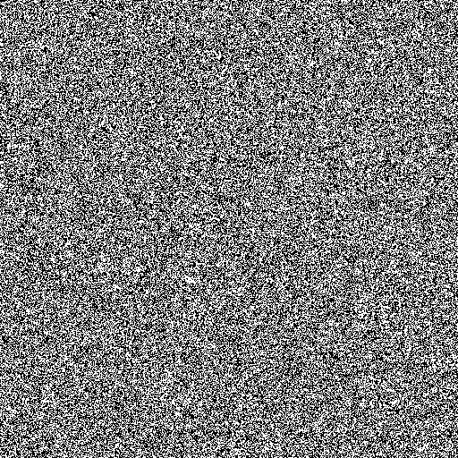
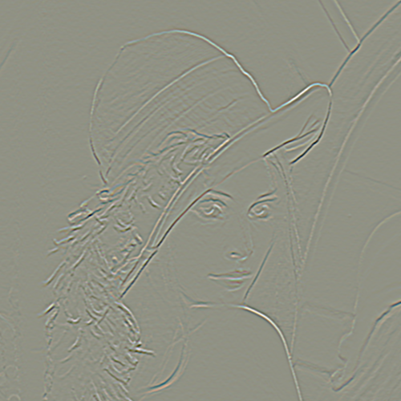

Unary- and Binary Image Filters¶
The ICLFilter package provides a large variety of set classes for image filtering. First of all, we recommend to start with What are Image Filters? in order to get an overview of our idea of image filters. Once you got the difference between unary- and binary operators, the grouped table of contents (below) will help you to find the filter you are searching for. Please note that the grouping that we performed is somehow arbitrary. The use of image filters is also described in a dedicated tutorial chapter (How to use Image Filters)
Table of Contents¶
What are Image Filters?¶
In a most general view of image filters, a filter is a black box that has a number of image inputs, lets say N, and a number of image outputs, M. Even though this definition provides a very generic interface for image filters, it is still not very feasible. Most common filters (e.g. binary image operations, linear filters or neighborhood operations) only need a single input and a single output image. Another larger group are filters with exactly two input and one output images (e.g. arithmetical/logical per-pixel image operations or image comparison filters). In order to avoid a large computational overhead arising of a too general interface, ICL basically supports two dedicated image filter interfaces for the above mentioned 1 to 1 and 2 to 1 input-output combinations. To obviate further misunderstandings, we call these filter sets Unary- and Binary operators – or short, UnaryOp and BinaryOp. Each of these sets is represented by an equally named C++-class-interface, which is inherited by all implemented filters in that group.
The Clip To ROI Property¶
Each UnaryOp instance can be set up with this boolean flag. If clip to ROI is active, the result images will always be adapted to the size of the source images ROI – or, in case of neighborhood operations even slightly smaller. If clip to ROI is deactivated, the result image will become as large as the source image, but only its ROI pixels will be set. (see UnaryOp::setClipToROI and UnaryOp::getClipToROI)
The Check Only Property¶
This property can also be set of each UnaryOp instance. If it is activated, the destination image will only be checked for compatible parameters rather then adapted. (see UnaryOp::setCheckOnly and UnaryOp::getCheckOnly)
Unary Operators¶
As discussed in What are Image Filters?, unary operators have use a single input and a single output image for their operation. The filter::UnaryOp class interface required the purely virtual method:
void apply(const core::ImgBase *source, ImgBase **destination)
to be implemented. The method must applied the operation on the given source image and writes the result to the given destination image, whose parameters, such as size, number of channels and also its core::depth, is always automatically adapted by the filter. The destination image is passed as pointer-pointer to enable the filter to even adapt its depth by reallocation (see also core::ensureCompatible, core::bpp and About the Use of ImgBase**s). The UnaryOp::apply method is kept as general as possible, leaving the managing of the destination image to the user. However, this is usually very easy, since UnaryOp::apply is able to automatically instantiate a destination image at the given address
|
 |
{kind=link}
In order to simplify the use of filters, an extra apply function is provided, that uses an internally managed destination image for calling UnaryOp::apply(const core::ImgBase *operand1, core::ImgBase **dst), which is returned by the method. The allows us to also nest several filters by just passing the result of one filter to the apply method of another one. Additionally, the UnaryOp function operator can also be used instead of apply. The following example demonstrates how to concatenate filters and it also gives an example for a custom filter.
|
 |
{kind=link}
Affine and Warp Operators¶
In this section, we grouped unary operators, that move pixels in general. In particular, the list contains so called affine operators that use an affine 3x3 matrix to estimate how pixels are to be moved.
Base class interface
General affine operator. Here, several affine operation can be concatenated resulting, due to the associative property of the operations, in a single 3x3 matrix that is then applied. By these means, e.g. rotations around a certain anchor positions can be realized.
This operator allows for mirroring images along horizontal, vertical or both axes at once
Restricts the generic AffineOp to allow rotations only
Restricts the generic AffineOp to allow scaling only
Restricts the generic AffineOp to allow translations only
The WarpOp uses a warp-table for estimating the pixel displacement rather than an affine matrix. The warp-table is a core::Img32f image with two channels Cx and Cy. Cx(x,y) contains the source X-position of the resulting images pixel (x,y), Cy the Y-position resp. Image warping is used, when a functional description of the pixel displacement is not given, or to complex to compute for each image pixel in real-time. In particular, this is used for image undistortion.
Todo
As soon as the image undistortion environment is reimplemented, we need to link this here
Neighborhood Operators¶
Neighborhood operators are filters, that use not only one, but also the neighbor pixels of in the source image to estimate the pixel value of the destination image. A very prominent example are linear filter – here called ConvolutionOp. A very important aspect for the neighborhood operators is how the image border pixels, for which no complete neighborhood exists, are handled. Dependent on the setting of the The Clip To ROI Property, the destination image will either become smaller or the border pixels will not be processed.
Base class interface, that overwrites. e.g. the destination image adation methods.
The ConvolutionOp implements general image convolution. The image is convolved with a so called filter::ConvolutionKernel, which is represented by an extra class. The Kernel can either be a common predefined one or an arbitrarily custom one. The predefined kernels, such as e.g. a sobel X kernel are internally hard-coded and therefore much faster.
Note
The IPP library provides a very high performace optimization here
Uses an core::Img-ROI as convolution kernel
Morphological or Hit-or-Miss transformations are also very common in digital image processing. It implements a set of common operations, such as erosion, dilatation, opening and closing, but also custom masks can used. The predefined operations are usually much faster.
Note
The IPP library provides a very high performace optimization here
The wiener image operator is defined as optimal de-noise filter. It is only provided in case of having Intel IPP support.
Gabor-filter and Gabor jets are very commonly used in image processing, for several proofs.
The median filter is known as an edge preserving filter for noise reduction. It basically sorts all neighborhood source pixels values into a 1D-list L of size n and sets the result pixel to L[n/2] (the median element of this list). However, it is worth mention, that usually implementations provide the same result much more efficiently
Inplace Operators¶
Inplace operators allow for memory throughput optimization by storing the processing result directly in the source image. However, this is not feasible for each operation. So far, we implemented this feature for the following operators.
icl::filter::InplaceOp
General interface class. The InplaceOp::apply method gets an un**const** core::ImgBase*:
void apply(core::ImageBase *srcDst);
Aritmetical operations, such like each pixel plus 5 or divide each by 2.
Logical operations, such as each pixel is binary ored with a mask.
Lookup-Table Operators¶
Here, a lookup table is used to assign each pixel a new value.un-const**. In order to limit the lookup table size, this is however only supported for core::Img8u images.
Basic LUT-operation implementation, that uses a simple std::vector<icl8u> as LUT.
This operator creates a 24bit LUT-index by combining a 3-channel image’s pixels. It also allows for using less the 8bit per channel (by no regarding the lesser significant bits) in order become faster and less memory consuming.
General Operators¶
This section contains all operators, that did not obviously belong to one of the other section.
Rather old utility class, that can be used create a list of filters where each filter uses its predecessors output as input. The UnaryOpPipe also implements the UnaryOp interface and it provides access to all intermediate images.
IPP based implementation of the canny edge detector. Here, no C++ fallback is available (IPP only)
Chamfering is used for approximating the creation of Euclidean Distance Maps (EDMs). Here, an image is originally filled with black, containing only a small percentage of white initial pixels. The EDM then defined for each pixel the euclidean distance to the nearest white pixel. The process is used in a model matching process called *ChamferMatching, which is also implemented by this class.
Fast Fourier Transform operator
Inverse Fast Fourier Transform operator
Integral images, originally introduced by Viola and Jones define the numerical 2D integral of the image function. The integral image value at location (x,y) is defined by the sum of pixel values upper left of (x,y) in the source image. The integral image can be used to compute Haar-Like-Features, but also for efficient real-time local thresholding.
This local threshold operator implements three different local threshold operations
- tiled threshold with linear interpolation
- tiled threshold with nearest neighbor interpolation
- a real local threshold using a neighborhood average as reference value
For each of these operations, a global threshold is used that is adapted for each pixel by looking at the average gray value in the pixel neighborhood.
This operator is the origin for a strong misconception: When we usually talk about image thresholding we think of an operation like:
if(source(x,y) > 128)){ destination(x,y) = 255; }else{ destination(x,y) = 0; }However this is actually not a threshold, but a image comparison-operations. The threshold operator clips the image’s value range to a given interval
Here, basic aritmetical operations with constant values are implemented
Actually, this is the operation, we most of the time think of, when talking about image thresholding. It always results in a binary Img8u-image.
Multiplies each image channel with a different constant
Multiplies each image channel with a different constant and sums up the result. Mathematically, this is indentical to the computation of the scalar product of each pixel color vector with a given constant vector.
- filter::GradientImage Does not extend the UnaryOp
interface, but it somehow works similar to the UnaryOp. The GradientImage can be used to determine an image gradient image
- intensity
- angle
- x- and y-component
Internally, sobel filters are used
Binary Operators¶
BinaryOp instances behave very similar to the already presented unary operators, except for the fact, that their BinaryOp::apply method get two instead of one source image arguments:
void apply(const core::ImgBase *src1, const core::ImgBase *src2,core::ImgBase **dst)Binary operators also provide a function operator interface for are more intuitive use.
Base class interface
This operator implements binary arithmetical operations such as pixel-wise addition of two image.
Pixel-wise logical comparison of two image, always resulting in a Img8u-binary image
Pixel-wise logical operation
This class is used for proximity measurement, that defines a pixel-wise similarity of two image. Here, the operand is always referred to as the source image, while the second operand is referred to as the pattern image. Internally, the pattern image is centered at every pixel location for a local comparison.
The class provides three apply modes that determines how to deal with overlap of the pattern and the source image borders, and also three different distance measurement metrics:
- square distance
- cross correlation
- normalized cross correlation
The operator is only supported with Intel IPP, but here, it is incredibly fast!
Other Utility Classes¶
In this final section, the remaining tools are listed
Utility class for the ConvolutionOp
Utility class for implementing the UnaryOp featuers The Clip To ROI Property and The Check Only Property.
Splits image horizontally into a set of shared-copies for mutli threading (not well supported)
Utility class for the deprecated UnaryOp::applyMT-function
Utility class to rectify images. Given a convex quardrangle, the image patch is interpolated smoothly into a rectangular image of given size